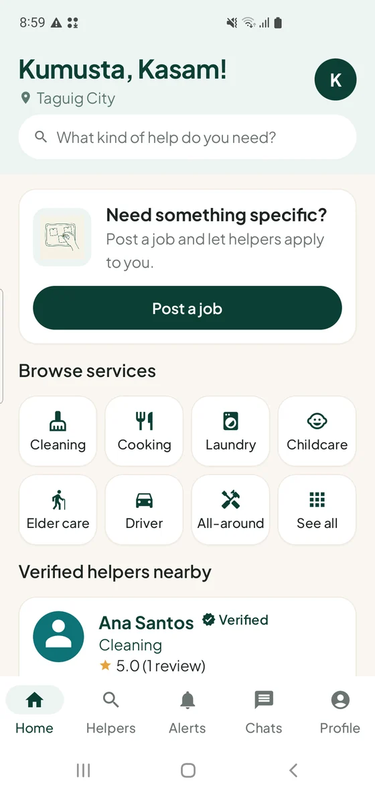
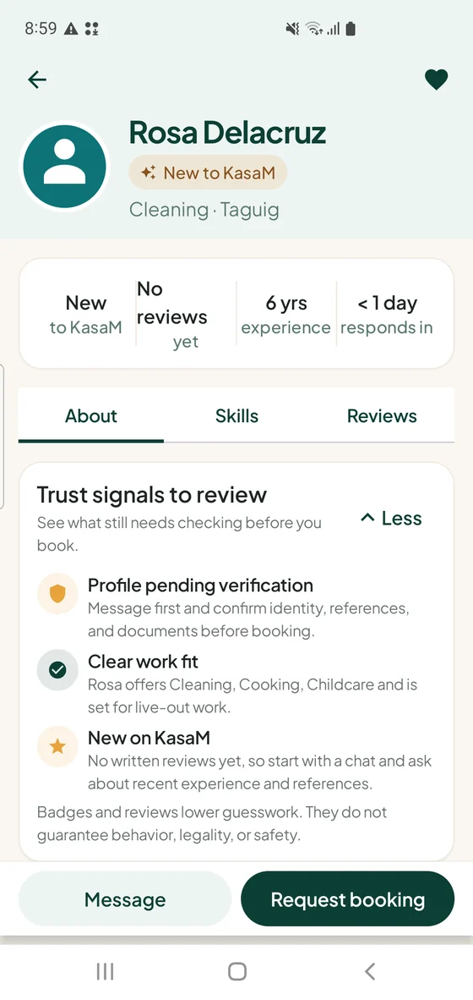
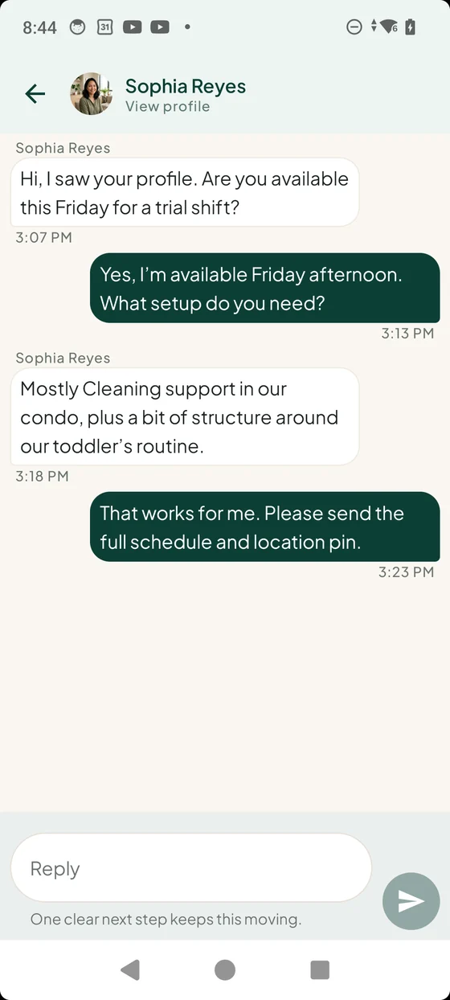
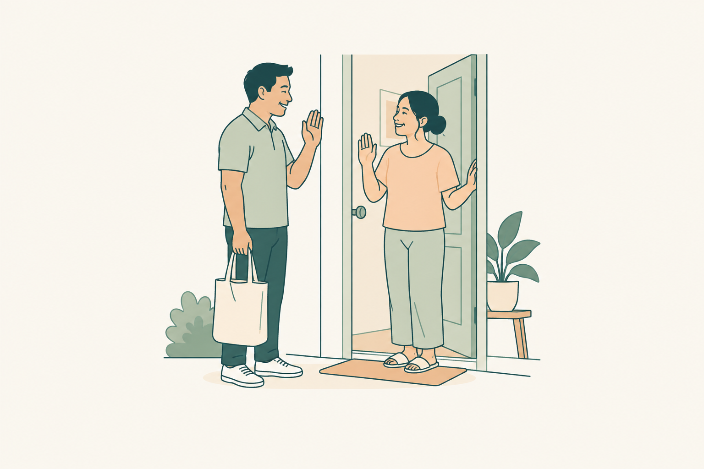

Preparing a pilot in Ayala Alabang
Household help,
closer to home.
KasaM is preparing a small pilot in Ayala Alabang to help households and service providers connect. The first service and pilot dates are still being decided.
Android and iPhone beta access is open. Choose your phone to see the next steps.
A family welcoming a helper.
Illustrative scene · Silent film
Start with a conversation
Make space to ask questions and understand the work.
Get the details clear
Discuss duties, hours, and rates before agreeing.
Respect goes both ways
Households and helpers both deserve a say.
A look inside KasaM
A conversation.
A clearer next step.
The app brings profiles, conversations, and booking details together. Here’s a look at an earlier beta as we prepare for the pilot.
Explore profiles
Get a sense of skills and experience.

Look a little closer
See what still needs checking.

Talk through the details
Keep the conversation in one place.

Illustrative beta screens, not live listings. Names, rates, locations, and services shown are examples. A profile or badge is not a guarantee of verification, availability, or safety.
For households
Help that starts with understanding your home.
Explore a way to find household help, discuss what you need, and keep booking details together. The pilot will begin with a defined service once the operating arrangements are ready.
For helpers & service providers
Your skills. Your voice.
Your side of the conversation.
Share your skills and availability, understand a household’s needs, and discuss the work before agreeing. Pilot participation and onboarding details are still being finalized.
Starting close to home
A small start.
Room to learn together.
KasaM is preparing a small household-service pilot in Ayala Alabang. We’re still working out the first service and how the pilot will run.
- Where
- Ayala Alabang
- What
- Service scope, prices, and operating arrangements are being finalized.
- When
- Pilot dates and participation details are not confirmed yet.

Kasama sa bawat hakbang.
Together, one step at a time.
App access
Your phone.
Your next step.
Join the Android beta through the tester group and Google Play, or use TestFlight on iPhone. App testing is separate from pilot participation.
Android beta
For Google Play accounts in the Philippines. Use the same Google account in Google Groups, the testing invitation, and Google Play on your phone.
Everyone, including previously invited testers, needs to join this group.
-
Join the tester group
Open the group and complete Join group on Google Groups.
Join tester groupOpens in a new tab. Return here after joining.
-
Get the beta on Google Play
Accept the beta invitation, then follow its Google Play installation link.
Get beta on Google PlayOpens in a new tab.
If access is unavailable, check that Google Groups and Google Play are using the same account. A Philippines Google Play account is required.
iPhone beta
Test the KasaM beta with Apple’s TestFlight app. App testing is separate from joining the Ayala Alabang pilot.
Install TestFlight
If you don’t have it yet, install Apple’s TestFlight app from the App Store on your iPhone.
Open the KasaM invitation
Open the invitation on your iPhone, accept it in TestFlight, then choose Install or Update.
Open KasaM in TestFlightOpens in a new tab and may open TestFlight.
If TestFlight says the beta is full or unavailable, follow its current message. An invitation does not confirm pilot participation.
Pilot participation is not open through this website yet.